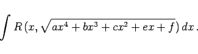
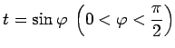

Inhalt Index DeskTop Bronstein

 Integralrechnung Unbestimmtes Integral Integration irrationaler Funktionen Elliptische Integrale
Integralrechnung Unbestimmtes Integral Integration irrationaler Funktionen Elliptische Integrale


Elliptische Integrale sind Integrale der Form
|  | (8.20b) |
Sie lassen sich in der Regel nicht durch elementare Funktionen ausdrücken; wenn dies trotzdem gelingt, nennt man sie pseudoelliptisch. Ausgangspunkt für die Bezeichnung war das erstmalige Auftreten eines derartigen Integrals bei der Berechnung des Umfanges der Ellipse. Die Umkehrung der elliptischen Integrale sind die elliptischen Funktionen. Integrale der Art (8.20a,b), die nicht elementar integrierbar sind, können durch eine Reihe von Umformungen auf elementare Funktionen und auf Integrale der folgenden drei Typen zurückgeführt werden (s. Lit. 21.1, 21.2, 21.6):
Bezüglich des Parameters n in (8.21c) sind Fallunterscheidungen notwendig (s. Lit. 14.1).
Mit Hilfe der Substitution  können die Integrale (8.21a,b,c) auf die LEGENDREsche Form gebracht werden: